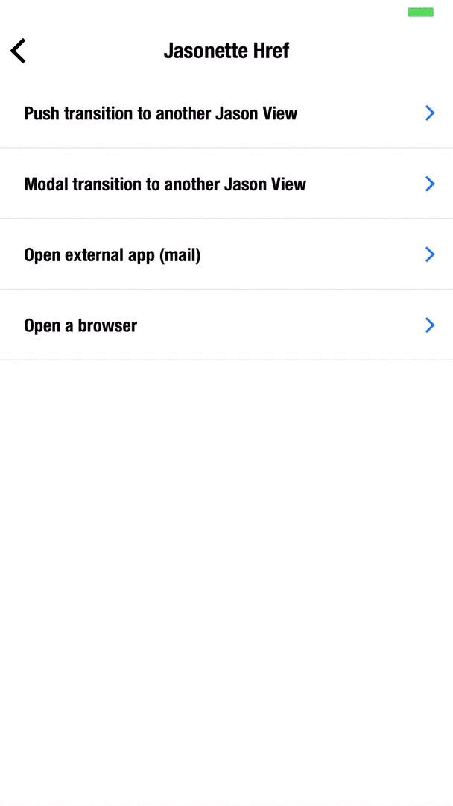

HREF
To describe links between views, we use href. Here are some of its traits:
hrefcan be attached to various UI elements to allow for interaction. This includes:- header.menu
- section items
- layers
- and anything that looks interactive: like the buttons on a chat input.
- A section item with an
hrefattribute will display a disclosure indicator>by default, to indicate that there's a next view (Only for vertically scrolling sections)- To change the indicator color, you need to set the
colorstyle attribute of the item. - If you want to use
hrefbut without the disclosure indicator, use the $href action instead.
- To change the indicator color, you need to set the
HREF ATTRIBUTES
■ url
The url to load in the next view
■ view
Type of view to load
1. "view": "jason"
Jasonette view. Will load JSON. This is the default.
Here's an example:
{
"type": "label",
"text": "Push me",
"href": {
"url": "https://www.jasonclient.org/next.json",
"view": "jason"
}
}
Since jason is the default, we don't really need to specify it. So we can just write:
{
"type": "label",
"text": "Push me",
"href": {
"url": "https://www.jasonclient.org/next.json"
}
}
2. "view": "web"
Web browser view. Will load HTML in an internal browser.
{
"type": "label",
"text": "Open a browser",
"href": {
"url": "https://www.twitter.com/gliechtenstein",
"view": "web"
}
}
Above example will result in the following transition:

3. "view": "app"
Open external apps using url scheme (ex: sms:, mailto:, twitter://)
{
"type": "label",
"text": "Email me",
"href": {
"url": "mailto:ethan.gliechtenstein@gmail.com?subject=You%20genius!",
"view": "app"
}
}
Above example will result in the following transition:

■ options
Parameters to pass to the next view. Here's how to set and use options:
Step 1. Set options
Set options attribute for href.
You can pass any JSON object (as long as it follows the convention)
{
...
"href": {
"url": "https://jasonclient.org/forums.json",
"options": {
"name": "howto"
}
}
...
}
Step 2. Retrieve options
To use the incoming options, we need to render the view dynamically using templates.
When the view transitions to the next, the next view can access the options passed in from the previous view using the $params object using a template expression, like this:
{
...
{
"type": "label",
"text": "{{$params.name}}"
},
...
}
Since $params is {"name": "howto"} at this point, above template will turn into:
{
...
{
"type": "label",
"text": "howto"
},
...
}
■ transition
The way the next view gets presented
"push": The next view slides in from the right side. (default)"modal": The next view opens up as a modal."replace": Replaces the current view with the content, instead of creating a separate view"fullscreen": Similar to push, but hides everything insidefooter
| push transition | modal transition |
|---|---|